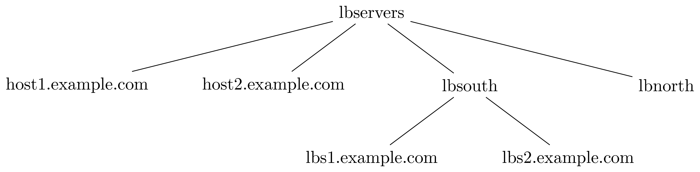

1. Inventory¶
Ansible performs actions, also known as tasks, over a group of computers; in order to do so it reads a plain text file called “inventory file” containing a list of hostnames, or IP addresses, often grouped based on one or multiple shared features.
The inventory file is located by default under /etc/ansible/hosts
and would typically follow the conventions shown below:
Group names are delimited by
[and]. e.g. group lbservers would be written as[lbservers].Hosts below a group definition are to be taken as members of it. e.g.
; lbservers -> Group ; [host1,host2].example.com -> Members [lbservers] host1.example.com host2.example.com

Using the suffix
:childrenwithin a group definition indicates the presence of nested groups (i.e. subgroups). e.g.; lbservers -> Group ; lb[south,north] -> Subgroups [lbservers:children] lbsouth lbnorth
Note
Subgroups are only declared as part of a parent-child relation (i.e. nesting depth is 1), thus implying that relations where nesting depth is greater than 1 require multiple declarations.
; lbservers -> Grandparent ; lb[south,north] -> Children [lbservers:children] lbsouth lbnorth ; lbs[1,2].example.com -> Grandchildren [lbsouth] lbs1.example.com lbs2.example.com
The suffix
:varswithin a group definition is used to declare and assign variables to a particular set of hosts or subgroups. e.g.Note
These variables are relative to group members and can be overwritten by subgroups and other ansible components (e.g. playbooks, tasks). See Ansible’s Variable Precedence article for more information.
; lbsouth and lbnorth will inherit all ; variables declared within lbservers. [lbservers:children] lbsouth lbnorth [lbservers:vars] requests_timeout=5 max_hosts_to_serve=10 ; "requests_timeout" will be overwritten ; for lbsouth members only. [lbsouth:vars] requests_timeout=3 ; Members of this group will not recognize ; variables declared for lbservers, as they ; do not belong to it. [backupservers] bk1.example.com bk2.example.com

It is impotant to highlight that there are two default groups: all and
ungrouped, which, unlike any other group, can be omitted within the
inventory file, as their definitions are both implicit. Please be aware that:
Hierarchically, all groups and hosts are members of
all.Hosts with no group other than all belong to
ungrouped. Therefore, hosts will be members of at least two groups.
Hence, it is true for the examples above:

2. Group variables¶
Note
This feature will not be detailed, as there is plenty of information about it in Ansible’s document: Working with Inventory
Keeping too much data within the inventory file can make it become complex, difficult to read and maintain. Ansible allows to easily bypass this issue by introducing a mechanism to split groups and hosts data:
Create a folder called
group_varsat the same level as the inventory file. That is, if the inventory file is located under$ANSIBLE_HOMEthen the folder must be there as well. e.g.mkdir -p $ANSIBLE_HOME/group_vars ls $ANSIBLE_HOME/ inventory group_vars/
Create files under
group_varsmatching your group names and store the corresponding variables into each one. Take the example from the Inventory section; There are variables declared for two groups, hence there would be two files undergroup_varsas shown below:# $ANSIBLE_HOME/group_vars/lbservers --- requests_timeout: 5 max_hosts_to_serve: 10
# $ANSIBLE_HOME/group_vars/lbsouth --- requests_timeout: 3
Moreover, variables within a group can be further organized by decoupling the
files inside group_vars. Ansible will read all files under
directories named after groups or hosts. For instance, variables from the
lbservers group can reside in multiple files under
$ANSIBLE_HOME/group_vars/lbservers/. e.g.
# $ANSIBLE_HOME/group_vars/lbservers/requests --- requests_timeout: 5# $ANSIBLE_HOME/group_vars/lbservers/config --- max_hosts_to_serve: 10
3. Modules¶
A module can be interpreted as a function ansible calls from a task. Basically, a module is the function’s entire body (i.e. declaration), waiting to be called from a task or an ansible ad-hoc command.
4. Playbooks¶
A playbook is a text file, written in YAMl format, containing information on which tasks to apply on which hosts. This information is contained within a definition block called “Play”. Take the following playbook for example:
---
- hosts: lbsouth
vars:
nginx_conf_dir: /etc/nginx/
- hosts: lbnorth
vars:
nginx_conf_dir: /opt/nginx/
- hosts: lbservers
vars:
nginx_log_dir: /var/log/ansible
tasks:
- name: Install/update nginx
yum:
name: nginx
state: latest
- name: Place nginx config file
template:
src: templates/nginx.conf.j2
dest: "{{ nginx_conf_dir }}/nginx.conf"
notify:
- restart nginx
- name: Ensure nginx is running
systemd:
name: nginx
state: started
enabled: true
handlers:
- name: restart nginx
systemd:
name: nginx
state: restarted
Plays are separated by a non-printable ‘\n’, thus there are three plays. Each one uses the keyword “hosts” to describe a group, defined in the inventory file, on which to apply some tasks and/or set variables, keywords “tasks” and “vars” respectively.
An easy way to comprehend what a playbook is, and why it is useful, is thinking on
what would one need to do in scripting languages, like bash, to accomplish what
a playbook is meant to. Take the task “Place nginx config file”. It calls
Ansible’s template module, which creates a file based
on a Jinja2 template. Hence, one could either use templates alongside bash, which
becomes complex and difficult to maintain really fast, use an external software to
parse them, like ruby erb or python + Jinja2, or manage static
files. Thereupon, additional concerns arise: how to deliver
files to lbservers’ hosts?, how to manage variables within them?, etc. Basically,
these questions represent steps to achieve something specific (for the task under
consideration, place a file called nginx.conf, whose content may vary,
on all hosts within lbservers) that can be interpreted as to lead a system to a
desired state. e.g.
Original state: lbservers’ hosts not having
nginx.confDesired state: lbservers’ hosts having
nginx.conf
A playbook can be, therefore, defined as the abstraction of a system’s final state, comprised of intermediate states represented by tasks. Sort of an assembly line analogy:

McDonald’s assembly line. Retrieved august 28, 2018 from https://slideplayer.com/slide/9882222/¶
Task 1 would represent an ansible run being triggered, tasks 2 to 5 the system’s pass through each intermediate state (i.e. bun toasted, bun assembled with condiments, patty wrapped, Order placed on heated landing pad) and task 6 the desired state (i.e. customer satisfied).
5. Roles¶
A role is a hierarchical directory structure intended to decouple playbooks by breaking them into multiple files, which is particularly useful to create reusable components and write simpler playbooks. A role’s layout would typically look as below:
Note
There are more directories than those listed below. See Ansible’s official documentation for more information.
<playbook 1>
<playbook 2>
.
.
.
<playbook n>
inventory
roles/
common/
tasks/
handlers/
files/
templates/
vars/
Let us elucidate on how playbooks can be decoupled by using the notion of a role. Take the example on the Playbooks section.
Identify a common feature within your tasks. For example, all tasks on the third play are related to nginx.
Use that common feature as a base to name your role and create a directory under
$ANSIBLE_HOME/roles.Note
$ANSIBLE_HOMEis used as a way to represent ansible’s folder location within the filesystem (e.g. /etc/ansible), which may vary depending on the setup.mkdir -p $ANSIBLE_HOME/roles/nginxDecouple tasks by placing them in taskfiles. As the name implies, a taskfile is a file containing task declarations; this files are often stored under
$ANSIBLE_HOME/roles/<role>/tasksand their name is irrelevant exept formain.yml, which must always be present. Although tasks can be all defined insidemain.yml, it is recommended to declare them in different taskfiles when their number is large enough to make a coupled taskfile difficult to read, and then call each one frommain.yml.# $ANSIBLE_HOME/roles/nginx/tasks/packages.yml --- - name: Install/update nginx yum: name: nginx state: latest
# $ANSIBLE_HOME/roles/nginx/tasks/config.yml --- - name: Place nginx config file template: src: templates/nginx.conf.j2 dest: "{{ nginx_conf_dir }}/nginx.conf" notify: - restart nginx - name: Ensure nginx is running systemd: name: nginx state: started enabled: true
# $ANSIBLE_HOME/roles/nginx/tasks/main.yml --- - name: "Including taskfile {{ taskfile }}" include_tasks: "{{ taskfile }}" with_items: - 'packages.yml' - 'config.yml' loop_control: loop_var: taskfile
Decouple variables. Declare them as Group variables, in the role’s local context or within a task. For instance, if one desires the variable
nginx_log_dirto be set for all hosts applying the nginx role:Note
Using
$ANSIBLE_HOME/roles/<role>/varsto store variables visible to all tasks within a role is a common practice. However, “vars” can be named differently or even placed under some other location.One would typically store variables inside
$ANSIBLE_HOME/roles/<role>/vars/main.ymlas for ansible to auto-load them, but there is also the alternative to do it manually (shown in this example).mkdir -p $ANSIBLE_HOME/roles/nginx/vars# $ANSIBLE_HOME/roles/nginx/vars/config.yml --- nginx_log_dir: /var/log/ansible
# $ANSIBLE_HOME/roles/nginx/tasks/main.yml --- # Unlike group_vars, ansible does not read files # inside the vars folder automatically, except "main.yml". # Therefore, in this case, it must explicitly be told to do so. # Remark: vars' location may vary. - name: 'Include variables' include_vars: dir: '../vars' extensions: - yml - name: "Including taskfile {{ taskfile }}" include_tasks: "{{ taskfile }}" with_items: - 'packages.yml' - 'config.yml' loop_control: loop_var: taskfile
As for the variables under
lbsouthandlbnorth:# $ANSIBLE_HOME/group_vars/lbnorth --- nginx_conf_dir: /opt/nginx/conf
# $ANSIBLE_HOME/group_vars/lbsouth --- requests_timeout: 3 nginx_conf_dir: /etc/nginx/conf
Decouple handlers. Handlers are stored the same way taskfiles are, but in a different location. They are placed inside the “handler” directory, which is at the same level as the “tasks” directory.
mkdir -p $ANSIBLE_HOME/roles/nginx/handlers# $ANSIBLE_HOME/roles/nginx/handlers/main.yml --- - name: restart nginx systemd: name: nginx state: restarted
Decouple templates. Stored under
$ANSIBLE_HOME/roles/<role>/templates, it is highly recommended to create a directory structure resembling that of the location where templates will be rendered. e.g.nginx.confwill be rendered in/etc/nginx/confforlbsouthand/opt/nginx/conf, forlbnorth, hence the template would reside in either$ANSIBLE_HOME/roles/nginx/templates/etc/nginx/confor$ANSIBLE_HOME/roles/nginx/templates/opt/nginx/conf. Note modifying the layout also implies adjusting all tasks usingnginx.conf.j2.1 2 3 4 5 6 7 8 9 10 11 12 13 14
# $ANSIBLE_HOME/roles/nginx/tasks/config.yml --- - name: Place nginx config file template: src: templates/etc/nginx/conf/nginx.conf.j2 dest: "{{ nginx_conf_dir }}/nginx.conf" notify: - restart nginx - name: Ensure nginx is running systemd: name: nginx state: started enabled: true
Call the role from the playbook (Note how it became simpler).
--- - hosts: lbservers roles: - nginx
Finally, consider the designated behavior for each role ‘x’ component (Taken from 5):
If roles/x/tasks/main.yml exists, tasks listed therein will be added to the play.
If roles/x/handlers/main.yml exists, handlers listed therein will be added to the play.
If roles/x/vars/main.yml exists, variables listed therein will be added to the play.
If roles/x/defaults/main.yml exists, variables listed therein will be added to the play.
If roles/x/meta/main.yml exists, any role dependencies listed therein will be added to the list of roles (ansible 1.3 and later).
Any copy, script, template or include tasks (in the role) can reference files in roles/x/{files,templates,tasks}/ (dir depends on task) without having to path them relatively or absolutely.
6. Vault (Encryption)¶
Note
Some features will not be detailed. Basic usage can be found in Ansible’s document: Ansible Vault
“New in Ansible 1.5, “Vault” is a feature of ansible that allows keeping sensitive data such as passwords or keys in encrypted files, rather than as plaintext in your playbooks or roles. These vault files can then be distributed or placed in source control.” 1
6.1. Create encrypted files¶
The command below will create a temporary file and subsequentially open it for you to write. Once the file is saved, and the text editor closed, ansible-vault will automatically generate an encrypted version of it and erase the original.
ansible-vault --vault-id <env>@<vault-password script> create <file>
Alternatively, if you intend to be prompted for the password, then:
# You could also use: # ansible-vault create <file> # However, environments would not be taked into consideration. ansible-vault --vault-id <env>@prompt create <file>
6.2. Encrypt files¶
ansible-vault --vault-id <env>@<vault-password script> encrypt <file-1> [file-2 file-3 ... file-n]
6.3. Encrypt variables as a string¶
ansible-vault encrypt_string --vault-id <env>@<vault-password script> --stdin-name '<varname>'
6.4. Edit encrypted files¶
Encrypted files can be edited without being decrypted a priori. See the command below:
ansible-vault --vault-id <env>@<vault-password script> edit <file>
6.5. View encrypted file¶
ansible-vault --vault-id <env>@<vault-password script> view <file>
6.6. View encrypted string¶
ansible localhost -m debug -a var='<variable_to_decrypt>' \ -e "@<file_containing_variable>" \ --vault-id <env>@<vault-password script>
6.7. Decrypt files¶
ansible-vault --vault-id <env>@<vault-password script> decrypt <file-1> [file-2 file-3 ... file-n]
6.8. Change encryption key¶
ansible-vault rekey <file-1> [file-2 file-3 ... file-n]
6.9. vault-password script¶
Vault’s password can be retrieved from a script, as described in 2, passed to the
option --vault-id, or --vault-password-file
from the ansible-vault and ansible-playbook executables.
Note
The script can be written in python, bash or any other scripting language.
Scripts invoked by --vault-password-file take no arguments,
return the password on stdout and do not have any knowledge about --vault-id
or multiple password files whatsoever. Using --vault-id to call upon
scripts, on the other hand, enables a ‘protocol’ under which a vault id can be
looked up and its associated password returned thereafter.
Furthermore, --vault-id allows for a vault id to be passed a
as an argument thus giving developers the ability to
program more sophisticated vault-password scripts.
Warning
For instance,
ansible-playbook --vault-id some_id@/path/to/keyring-client.sh some_playbook.yml
will result in keyring-client.sh to be invoked as:
/path/to/keyring-client.sh --vault-id some_id
Let us delve into a more detailed example:
Assumptions
Ansible is being run from three clusters.Cluster orchestrators (masters) are named after the convention
cluster<cluster number>.<domain>and compute nodescompute<cluster number>-<number>. e.g. Cluster 1 is comprised ofcluster1.localandcompute-1-0.local,compute-1-1.local.Clusters 1 and 2 belong to the production environment. Cluster 3 belongs to the development environment.
Servers from a particular cluster cannot access servers from other cluster.
The script
/usr/sbin/keyring-client.shhas the content shown below:1 2 3 4 5 6 7 8 9 10 11 12 13 14 15 16 17 18
#!/bin/bash case $1 in "--vault-id") declare -r env="$2" ;; *) exit 1 ;; esac declare -r cluster=`hostname | awk -F'.' '{print $1}'` declare -r cmd="ssh remote \ cat /etc/secrets/$env/$cluster" declare -r vault_passwd="$($cmd)" echo "$vault_passwd"
The vault id reprents an environment: dev (development), prod (production).
A server called
remote(see line 13 from script) holds multiple passwords, one per cluster, stored under/etc/secrets/<environment>/<cluster>:/etc/secrets/prod/cluster1/etc/secrets/prod/cluster2/etc/secrets/dev/cluster3
Sample use case
Create a git repository to hold ansible’s information.
mkdir -p ~/ansible cd ~/ansible git initCreate an inventory file.
; ~/ansible/inventory [cluster1] cluster1.local compute-1-0.local compute-1-1.local [cluster2] cluster2.local compute-2-0.local compute-2-1.local [cluster3] cluster3.local compute-3-0.local compute-3-1.local [clusters] cluster1 cluster2 cluster3
Create a playbook to change the root password. Since repeating code is an awful practice, we decided to create a reusable task and manage the user password through a variable.
# ~/ansible/playbook.yml --- - hosts: clusters tasks: - name: Set root password user: name: root password: "{{ root_password_hash }}"
Retrive each root password hash.
# Password - cluster1: 123 openssl passwd -1 -salt Password: Verifying - Password: $1$PpScqWH9$/Rpsq9/mJVxnaCEmrSAv31 # Password - cluster2: 456 openssl passwd -1 -salt Password: Verifying - Password: $1$RB/C07h4$t1lWpEQO/APEBwYPyhjai1 # Password - cluster3: 789 openssl passwd -1 -salt Password: Verifying - Password: $1$mRBrUoTy$xAoiS8xIeT6pm8HZZvKmL1
Encrypt the hashes using the vault-password script. Note the process is exactly the same for all servers (login, run ansible-vault, paste hash, press Ctrl-d, retrieve hash), therefore showing it for one will be enough of a clarification.
Caution
DO NOT underestimate string trimming. That is, Vault does not trim any \n. Hence, pasting the hash, pressing [Return] and then [Ctrl]-[d] would include an EOL.
Remember to give Vault’s –vault-id option the apropriate environment for each server.
ssh cluster1.local ansible-vault encrypt_string \ --vault-id prod@/usr/sbin/keyring-client.sh \ --stdin-name 'root_password_hash' Reading plaintext input from stdin. (ctrl-d to end input) $1$PpScqWH9$/Rpsq9/mJVxnaCEmrSAv31root_password_hash: !vault | $ANSIBLE_VAULT;1.2;AES256;prod 34376666646335616561643965613763613163623262663262313961613262316565623237363434 6138363635336330616364633539653466323264653133330a326465346136383635343961346434 66376665356534616366333465346166633364373438623133623363303262343464663266623337 6136363864643936620a373734656435376331393265653138613835336237636437656666663361 66636130613232383766656134306566353562333166323164663731623238353430633830343833 6131643734643639383332613635323264363065316464366232 Encryption successful exit
Create the group variable
root_password_hashand assign it the appropriate hash.mkdir -p ~/ansible/group_vars
# ~/ansible/group_vars/cluster1 --- root_password_hash: !vault | $ANSIBLE_VAULT;1.2;AES256;prod 34376666646335616561643965613763613163623262663262313961613262316565623237363434 6138363635336330616364633539653466323264653133330a326465346136383635343961346434 66376665356534616366333465346166633364373438623133623363303262343464663266623337 6136363864643936620a373734656435376331393265653138613835336237636437656666663361 66636130613232383766656134306566353562333166323164663731623238353430633830343833 6131643734643639383332613635323264363065316464366232
# ~/ansible/group_vars/cluster2 --- root_password_hash: !vault | $ANSIBLE_VAULT;1.2;AES256;prod <encrypted hash>
# ~/ansible/group_vars/cluster3 --- root_password_hash: !vault | $ANSIBLE_VAULT;1.2;AES256;dev <encrypted hash>
Note how each vault id corresponds to the cluster’s environment, which, in this case, determines the script’s behavior (see figure Sample vault script workflow).
Connect the repository to Github, Gitlab or any other remote platform. Then commit and push the changes.
cd ~/ansible git remote add origin git@github.com:username/ansible git add --all git commit -m "<some message>" git push -u origin master
Download the repository from each cluster orchestrator and run ansible.
Warning
Since clusters cannot see each other, ansible will only apply changes to the servers belonging to the same cluster an orchestrator is member of despite the existance of multiple cluster declarations within the inventory file. This approach, however, is not recommended for a production environment.
ssh cluster1.local cd /etc git clone git@github.com:username/ansible ansible-playbook --vault-id prod@/usr/sbin/keyring-client.sh \ -i /etc/ansible/inventory \ /etc/ansible/site.yml exit ssh cluster2.local cd /etc git clone git@github.com:username/ansible ansible-playbook --vault-id prod@/usr/sbin/keyring-client.sh \ -i /etc/ansible/inventory \ /etc/ansible/site.yml exit ssh cluster3.local cd /etc git clone git@github.com:username/ansible ansible-playbook --vault-id dev@/usr/sbin/keyring-client.sh \ -i /etc/ansible/inventory \ /etc/ansible/site.yml exit
In order to decrypt the variable
root_password_hashansible executes/usr/sbin/keyring-client.sh, which:Acesses
remoteusing sshRetrieves the appropriate password, contingent on the cluster’s name and environment.
Prints the password to the standard output.
The workflow depicted in the figure Sample vault script workflow shows what ansible will do on each cluster.

Sample vault script workflow¶
7. Environments¶
Environments provide a way to reuse ansible components (tasks, roles, playbooks, etc.) on
multiple systems by maintaining different inventory files within the same project; which might also
mean multiple group_vars and host_vars folders. Environments are usually
used for testing purposes, such as verifying the integrity of
features to be introduced in production servers.
Instead of being an ansible feature, environments are more of a concept materialized on the project’s directory layout. Take the example from the Roles section:
playbook.yml
inventory
group_vars/
lbnorth
lbsouth
roles/
nginx/
tasks/
packages.yml
config.yml
main.yml
handlers/
main.yml
templates/
/etc/nginx/conf/nginx.conf.j2
vars/
config.yml
If one were to constantly update the production servers, it would be wise to test changes on a system replica before releasing them. In order to create such replica, either using a virtual or physical machine, one must ensure equivalent operations to be applied over the testing servers, thus compelling them to become alike to their production counterparts. This is accomplished by reusing the entire project, but running ansible against different inventory files on each system:
1 2 3 4 5 6 7 8 9 10 11 12 13 14 15 16 17 18 19 20 21 22 23 | playbook.yml
environments/
production/
inventory
group_vars/
development/
inventory
group_vars/
group_vars/
lbnorth
lbsouth
roles/
nginx/
tasks/
packages.yml
config.yml
main.yml
handlers/
main.yml
templates/
/etc/nginx/conf/nginx.conf.j2
vars/
config.yml
|
For production servers
ansible-playbook -i $ANSIBLE_HOME/environments/production/inventory \ $ANSIBLE_HOME/playbook.yml
For testing servers
ansible-playbook -i $ANSIBLE_HOME/environments/development/inventory \ $ANSIBLE_HOME/playbook.yml
Control over tasks is done by employing variables, tags and/or other metaparameters. Ansible will load variables from the specified environment, expand them and run tasks accordingly, as depicted in figure Simple multi-environment activity diagram.

Simple multi-environment activity diagram¶
References
- 1
Ansible Vault, August 17 - 2018. Retrieved August 30 - 2018, from https://docs.ansible.com/ansible/latest/user_guide/vault.html?highlight=vault
- 2
Ansible Vault, Providing Vault Passwords, August 17 - 2018. Retrieved August 30 - 2018, from https://docs.ansible.com/ansible/latest/user_guide/vault.html?highlight=vault#providing-vault-passwords.
- 3
Issue: Allow the vault_id to be passed to vault password scripts #31001, September 27 - 2018. Retrieved Retrieved August 30 - 2018, from https://github.com/ansible/ansible/issues/31001
- 4
Vault secrets client inc new ‘keyring’ client #27669, October 13 - 2018. Retrieved August 30 - 2018, from https://github.com/ansible/ansible/pull/27669
- 5
Using Roles, September 06 - 2018. Retrieved September 06 - 2018, from https://docs.ansible.com/ansible/2.5/user_guide/playbooks_reuse_roles.html#using-roles